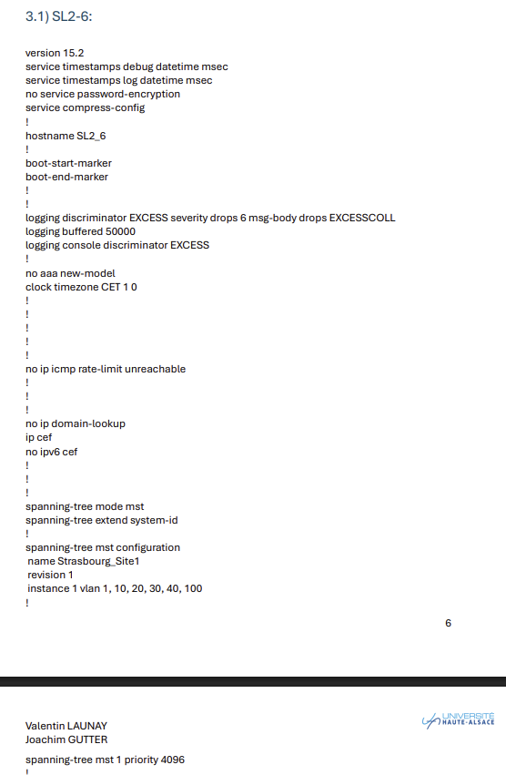
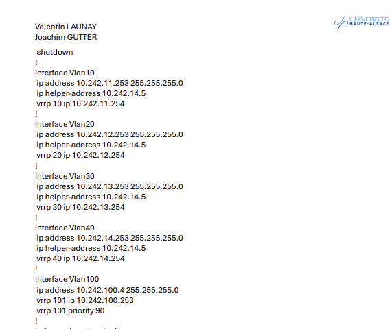
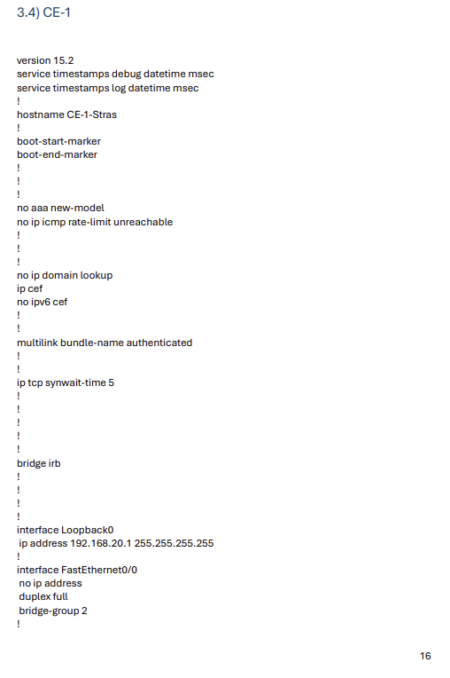
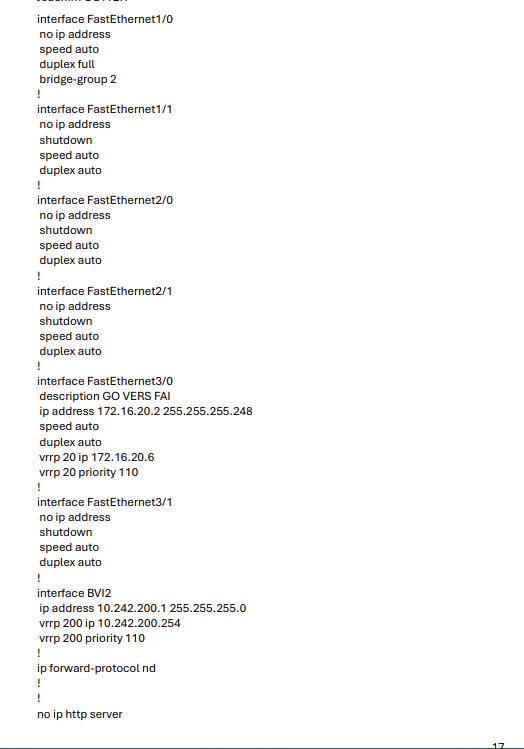
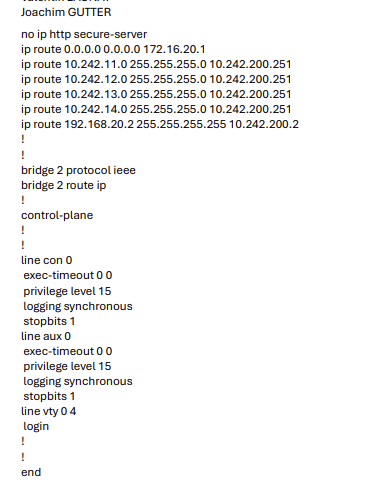

Déploiement d'architectures d'entreprise résilientes, sécurisation de niveau 2/3 et gestion des services d'infrastructure avancés.
AC21.01 : Configurer et dépanner le routage dynamique dans un réseau.
Contexte et Objectifs :
Dans le cadre de la SAÉ 3.03 (Rapport LAN), la problématique principale consistait à concevoir et déployer une infrastructure locale d'entreprise robuste, répartie sur plusieurs segments et éliminant tout point de défaillance unique (SPOF). L'objectif était de garantir une continuity de service transparente pour l'ensemble des postes de travail (VLAN 10 Informatique, VLAN 20 Direction, VLAN 30 Financier) et la zone serveurs (VLAN 40) en virtualisant l'accès aux passerelles par défaut.
Déploiement Technique :
J'ai mis en œuvre de manière généralisée la haute disponibilité de niveau 3 en configurant le protocole VRRP (Virtual Router Redundancy Protocol). Ce protocole a été déployé directement sur les interfaces virtuelles de commutateurs multicouches de distribution (SL2_4 et SL2_6). Pour chaque sous-réseau, j'ai défini des adresses IP physiques uniques pour les interfaces de commutateurs (ex: .252 pour SL2_6 et .253 pour SL2_4) associées à une adresse IP virtuelle (VIP en .254) servant de passerelle commune. En configurant des priorités spécifiques (110 pour l'équipement maître par défaut sur SL2_6), j'ai forcé le commutateur principal à porter le trafic nominal, tandis que SL2_4 restait prêt à assumer les fonctions d'inter-VLAN et de routage en cas de rupture matérielle. Cette stratégie de redondance a été prolongée en bordure de réseau WAN sur les routeurs CE-1 et CE-2.
Bilan et Dépannage :
Ce projet a ancré mes compétences pratiques en routage et redondance de passerelles. J'ai assimilé l'utilisation des commandes de vérification de l'état des instances VRRP et je suis désormais capable de diagnostiquer les pannes de liens, de valider la convergence d'une topologie redondante et de gérer un plan d'adressage IP complexe à l'échelle d'une entreprise multi-sites.
AC21.02 : Configurer et expliquer une politique simple de QoS et les fonctions de base de la sécurité d’un réseau.
Contexte et Objectifs :
L'interconnexion redondante de commutateurs dans un réseau local engendre inévitablement des boucles de commutation de couche 2, provoquant des tempêtes de broadcast qui saturent les liens. L'objectif était de stabiliser la topologie de la SAÉ 3.03 en déployant des politiques anti-boucles efficaces, tout en sécurisant de bout en bout l'administration et la distribution de la base de données des VLANs.
Déploiement Technique :
Pour optimiser les ressources CPU des équipements Cisco, j'ai privilégié le déploiement du protocole Spanning-Tree en mode MST (Multiple Spanning Tree, norme IEEE 802.1s). J'ai configuré la région MST Strasbourg_Site1 (revision 1) et mappé l'ensemble des sous-réseaux (VLAN 1, 10, 20, 30, 40, 100) au sein d'une instance unique (instance 1), unifiant ainsi les calculs d'arbre de commutation. SL2_6 a été configuré comme Root Bridge principal avec une priorité basse de 4096. Parallèlement, pour interdire toute modification malveillante ou désynchronisation accidentelle de la base de données des VLANs, le protocole VTP version 3 a été activé sur tout le parc informatique, assurant une gestion centralisée via un serveur primaire authentifié. Enfin, la sécurité des accès d'administration sur les lignes VTY a été durcie en désactivant Telnet et en activant le protocole SSH avec les algorithmes d'encryption renforcés aes128-ctr, aes192-ctr et aes256-ctr.
Bilan :
L'administration de la couche 2 et de sa sécurité is acquise. J'ai compris l'importance de durcir la configuration interne des commutateurs (Spanning-Tree, VTPv3, SSH) pour empêcher des attaques internes de type déni de service (DoS) ou usurpation d'équipements de transit.

[ CONFIGURATION À AJOUTER : Capture de la configuration « spanning-tree mode mst » ou résultat d\'un « show vtp status » ] Chemin attendu : images/but2admin/spanning_tree_vtp.png
'" />
Fig. 2 — Vérification de l'instance MST et durcissement SSH (SAÉ 3.03)
AC21.03 : Déployer des postes clients et des solutions virtualisées adaptées à une situation donnée.
Contexte et Objectifs :
L'administration d'un parc informatique d'entreprise nécessite la centralisation de la gestion des identités, des machines et des droits d'accès à l'information. L'objectif était de déployer une infrastructure logicielle centralisée sous forme d'annuaire et d'automatiser le contrôle d'accès aux partages de fichiers.
Déploiement Technique :
J'ai étudié et mis en œuvre les concepts fondamentaux d'Active Directory (AD) intégré à un système de serveurs virtualisés (Windows Server). La base de données Active Directory (répertoire LDAP stocké dans ntds.dit) a été déployée pour centraliser les objets de sécurité (comptes utilisateurs, comptes ordinateurs). Pour assurer une administration fiable et limiter l'erreur humaine, j'ai appliqué la stratégie recommandée par Microsoft en matière de gestion des droits : l'imbrication de Groupes Globaux (GG) et de **Groupes de Domaine Local (GDL)**. Les comptes utilisateurs sont placés dans des Groupes Globaux représentant leur fonction ou pôle métier (ex : GG Direction, GG Développement Web), et ces GG sont ensuite insérés dans des Groupes de Domaine Local (GDL) auxquels sont directement affectées les permissions NTFS (Contrôle total, Modification, Lecture) sur les répertoires partagés de l'entreprise.
Bilan :
La maîtrise de la virtualisation système et de la gestion de domaines Active Directory est consolidée. Je sais modéliser une structure organisationnelle (OU), appliquer le principe du moindre privilège via les permissions de sécurité de groupe, et assurer la haute disponibilité de l'annuaire par la réplication multi-maître entre contrôleurs de domaine.
R2.02 : Administration système et fondamentaux de la virtualisation
R3.04 : Services d'annuaires
SAÉ 3.03 : LAN
AC21.04 : Déployer des services réseaux avancés.
Contexte et Objectifs :
Un réseau segmenté en VLANs isole par défaut les flux de diffusion (broadcast). Dans la SAÉ 3.03, les serveurs de production (DHCP à l'IP 10.242.14.5, DNS/Active Directory à l'IP 10.242.14.6) étaient centralisés au sein du VLAN 40 (site de Metz). L'objectif était de permettre la distribution automatique d'adresses IP et la résolution de noms pour les postes de travail (Windows 10, Debian) situés sur d'autres VLANs et d'étudier l'architecture DNS et E-mail de l'entreprise.
Déploiement Technique :
N'acceptant pas les broadcasts DHCP Discover natifs à travers les sous-réseaux, j'ai configuré la fonction de relais DHCP en injectant la commande ip helper-address 10.242.14.5 sous les interfaces virtuelles SVI (Vlan10, Vlan20, Vlan30) des commutateurs de distribution multicouches. Le commutateur encapsule ainsi la requête locale dans un paquet unicast routable vers le serveur DHCP. Parallèlement, j'ai étudié le fonctionnement approfondi du **Domain Name System (DNS)**, composant indissociable d'Active Directory via le service NETLOGON. J'ai analysé les mécanismes de requêtes récursives et itératives (interrogeant successivement les serveurs racines de la zone point `.` jusqu'aux serveurs de premier niveau TLD comme l'AFNIC pour le `.fr`), la gestion des serveurs DNS primaires et secondaires par transfert de zone (requête sur le port TCP 53), et l'utilité des enregistrements clés (A, AAAA, NS, CNAME, MX et le SOA de début d'autorité). J'ai également configuré les services de messagerie basés sur l'architecture standard MUA, MTA (protocole **SMTP** sur les ports de transaction 25/587) et MDA (protocoles de relève **POP** sur le port 110 et **IMAP** sur le port 143).
Bilan :
Cette compétence valide mon aptitude à orchestrer les services d'infrastructure indispensables à une entreprise. J'ai assimilé la syntaxe des outils de test réseau avancés (dig, drill, nslookup) pour interroger les enregistrements et vérifier l'intégrité de la zone DNS.

[ CONFIGURATION À AJOUTER : Capture d\'écran d\'une commande « drill uha.fr SOA » ou extrait de la table des matières de ton rapport réseau ] Chemin attendu : images/but2admin/dns_dhcp_relay.png
'" />
Fig. 4 — Interrogation des enregistrements SOA via l'outil d'analyse réseau drill
SAÉ 3.03 : LAN (Architecture du Local Area Network)
AC21.05 : Identifier les réseaux opérateurs et l’architecture d’Internet.
Contexte et Objectifs :
La compréhension des interconnexions à l'échelle mondiale et du transit des données à travers les infrastructures des Fournisseurs d'Accès Internet (FAI) est indispensable pour valider le niveau d'administrateur, particulièrement dans le parcours Réseaux Opérateurs et Multimédia (ROM).
Déploiement Technique :
Dans le cadre de la SAÉ 3.03 LAN, nous avons modélisé la transition complète entre le réseau privé d'entreprise et le réseau WAN de l'opérateur. La redondance de la bordure et l'accès Internet ont fait l'objet d'une attention critique. J'ai configuré les routeurs de bordure clients CE-1 (CE-1-Stras) et CE-2 pour communiquer directement avec les routeurs du cœur de l'opérateur R1 et R2. La liaison physique a été redondée (chaque équipement étant connecté deux fois avec son voisin) pour parer à toute rupture de ligne. J'ai configuré l'interface WAN en 172.16.20.0/29 avec une instance VRRP 20 (IP virtuelle 172.16.20.6) pour sécuriser la passerelle FAI de l'ASBR (Autonomous System Boundary Router), et injecté des routes statiques d'interconnexion vers le réseau de l'opérateur.
Bilan :
Ce travail m'a permis d'assimiler concrètement la séparation des responsabilités entre le réseau d'entreprise et la boucle locale de l'opérateur. J'ai compris le rôle des architectures WAN d'opérateurs de transmission, les concepts de cœur de réseau (Core Network) et la manière de distribuer des routes par défaut de manière étanche et redondée.

Fig. 5a — En-tête de configuration du routeur CE-1-Stras : hostname, bridge IRB et interface Loopback0 (192.168.20.1/32) — SAÉ 3.03

Fig. 5b — Interface FastEthernet3/0 « GO VERS FAI » à 172.16.20.2/29 avec VRRP 20 (VIP 172.16.20.6, priorité 110) et interface BVI2 vers le segment de bordure 10.242.200.0/24 — SAÉ 3.03

Fig. 5c — Routes statiques du CE-1 : route par défaut vers 172.16.20.1 (FAI) et routes de retour vers les VLANs 10/20/30/40 via 10.242.200.251 (VRRP cœur) — SAÉ 3.03
SAÉ 3.03 : LAN (Redondance de la bordure et accès Internet)
AC21.06 : Travailler en équipe pour développer ses compétences professionnelles.
Contexte et Objectifs :
Les projets d'ingénierie moderne en Réseaux et Télécommunications exigent d'adopter des méthodologies de travail collaboratives structurées afin de mener à bien le déploiement de solutions sous fortes contraintes techniques et de temps.
Déploiement Technique :
Au cours de cette année, le travail de groupe a pris des formes variées. Pour la SAÉ 3.03 LAN (menée en binôme avec Joachim GUTTER), nous avons dû coordonner nos configurations CLI, uniformiser nos tables d'adressage IP et rédiger conjointement notre documentation d'architecture. Pour la SAÉ 3.01 (Prise Connectée Intelligente WiFi) menée en groupe de 4 à 5 étudiants, le cahier des charges imposait une limite de temps stricte de 15 heures encadrées. Nous avons dû mener des tâches en parallèle pour réussir : modélisation de la carte électronique sur EasyEDA, programmation C++ du microcontrôleur ESP8266 et déploiement du serveur web. Enfin, pour la SAÉ 3.02 (Routage en Oignon), nous avons planifié nos livrables (planning prévisionnel, journal de bord) en utilisant des dépôts Git/GitHub partagés pour synchroniser l'avancée de nos scripts Python de manière collaborative.
Bilan :
Ces collaborations m'ont appris à définir mon rôle technique au sein d'une équipe, à utiliser des outils numériques collaboratifs de gestion des tâches (Kanban, Git) et à fusionner mes briques logicielles ou configurations avec celles de mes collaborateurs tout en respectant scrupuleusement les délais imposés.